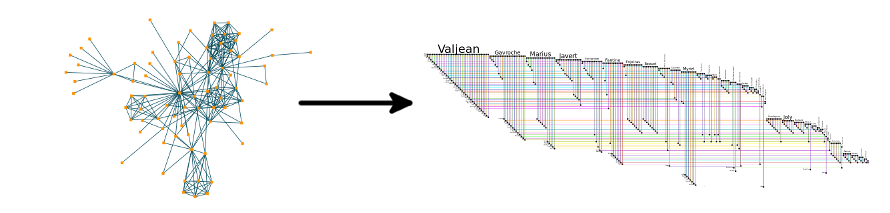
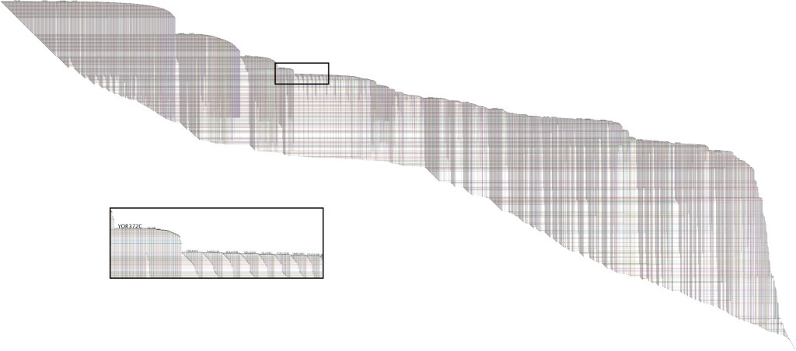

|
|
| News |
|---|
| June 15, 2019: BioFabric Version 2 Beta Release 2 is now on GitHub |
Super-Quick Demo
What does BioFabric do? It displays a network where nodes are depicted as horizontal lines, not as points! Take a look at the
Super-Quick Demo to see how it works in under 60 seconds:

Description
BioFabric uses a novel network presentation method that represents nodes as horizontal line segments, one per row. For example,
this is the yeastHighQuality.sif sample network of protein-protein interactions distributed with
the Cytoscape download;
it is based upon [vonMering2002] and
[Lee2002]. It contains over 3,000 nodes and 6,800 edges:

Significant features:
-
Nodes are represented as one-dimensional horizontal line segments, one per row.
-
Edges are represented as one-dimensional vertical line segments, one per column, terminating at the two rows associated with the endpoint nodes.
-
Edges are drawn darker than nodes; this has the effect of emphasizing the links and making them appear to float in front of the nodes.
-
Both ends of a link are represented as a tiny square. This provides sufficient contrast to make the ends of the link stand out even at large scales.
In the case of directed edges, the appropriate end is tagged with an arrowhead.
-
Edges are unambiguously represented and never overlap.
-
In networks that have multiple edges between the same nodes, i.e. representing different types of relationships, all edges show up clearly.
-
As nodes are represented as horizontal lines, there is no requirement that all edges converge upon a single point,
allowing for complete flexibility in where a link is drawn.
-
Links can originate, and terminate, anywhere along the length of the node segment. This flexibility introduces the powerful
ability to create sets of links that share some semantic property and depict them as discrete groups in the visualization.
-
The addition of a new edge just increases the width of the visualization, and does not degrade the existing presentation
in any fashion.
-
The visualization technique produces a distinct edge wedge for each node, created by the close-set juxtaposition
of the parallel links, that provides clear visual cues about how the node is connected, and how it compares to other similar nodes.
-
A set of 32 colors is used, not randomly, but in a repeating cycle to render node and edge segments.
Colors are not used to apply semantic meaning to network elements, but are crucial for providing a
framework that allows the user to visually trace features over long distances. Also, the use of
cycling insures that antialiased rendering will produce larger-scale color patterns that provide
useful visual cues even when individual links cannot be discerned.
-
Note that the traditional technique overloads the two-dimensional plane, using the same space to represent
both nodes and edges. BioFabric effectively segregates the plane into two separate one-dimensional spaces,
and assigns each space to either nodes or edges; the imposition of orthogonality and the use of judicious
rendering allow the user to visually distinguish the two. Thus, BioFabric can provide additional clarity
of the network structure while using the same underlying two-dimensional resource.
Download
BioFabric Version 1.0, available from the links below, remains the current production version. However, it is
now almost seven years old. Development has been continuing over the years, and Version 2.0 is now approaching
completion. Version 2 Beta Release 2 is now available on
GitHub. A list of the improvements
introduced in V2 is provided in the GitHub README.
While there are still some issues to be resolved, it is so much better in so many ways that it is probably the better
option at this point. If you run into any problems with the Beta version, you can post a bug report on the
GitHub Issues page.
Starting with Version 2 Beta Release 2, BioFabric is bundled with its own Java runtime for all three
popular platforms, so no additional Java Runtime Environment (JRE) installation is required. The executables are
also signed, so there should be no issues installing or running the program (though with Mac you will need to at
least temporarily allow GateKeeper to install programs not from the App Store). The Windows version is no longer
a single jar file, and it comes with an installer program that also installs the Java runtime. Plus, there is finally
a tailored Linux version as well!
Also starting with Version 2 Beta Release 2, to keep up with the times. BioFabric sets the Java heap space
to 8 GB. If this is a problem for your system, feel free to report it on the GitHub Issues
page.
(Soon to be Obsolete) Version 1 Download Instructions
BioFabric is written in Java, and can be run on your Windows, Mac, or Linux computer. Note that all these downloadable executables
require that you first download and install the Java Runtime Environment (JRE), which can be downloaded from
here (click the "Free Java Download" button). On MacOS X, Java should already be
factory-installed on all new Macs, but Java 6 is highly recommended for Macs so that large-scale views do not render so lightly as to
be almost invisible. Note that all of the following versions are configured for 2 GB Java heap space.
Choose from the following download options:
- Windows: You need to download this BioFabric100.zip archive file. Depending
on your configuration of Windows, your computer will either automatically unzip the archive and display its contents, or
you will need to unzip it manually using a program like PKZIP. Drag the BioFabric.exe file out of the archive and drop it on your desktop.
Double-clicking on the desktop icon will start the program running.
- Mac: Disk images are a standard way to distribute software on Macs. The BioFabric application is contained
in this BioFabricInstallImage100.dmg disk image. Download this disk image file.
Depending on your configuration, the file may be stored in your Downloads folder, then automatically mounted and opened in
a Finder window, or it may end up on your desktop, where you might have to double-click the file to mount the disk image, and then open the
Finder manually by double-clicking on the hard disk icon (called BioFabricInstallImage100). From the Finder window,
drag the BioFabric icon inside onto your desktop (or, if you prefer, into your Applications folder). You can then eject the disk
image by dragging the hard disk icon to the Trash. Double-clicking on the BioFabric icon will start the program running. Once
it is in the dock, you can Ctrl-click the mouse and select for it to stay in your dock.
Important! Currently, the best results for rendering on a Mac use the Java 6 Runtime! With Java 5, large-scale views are not visible, and small-scale views render too lightly.
| Important Information for Mac Users with OS X newer than v10.7.5! |
|---|
Trying to run BioFabric will cause a message to appear
telling you that it is damaged. On Mavericks, it will even recommend that you move it to the trash. There is nothing wrong
with BioFabric. This is due to new restrictions imposed by the Gatekeeper
system; BioFabric not signed with an Apple Developer Certificate. Based on recent user reports, you may need to
to completely disable Gatekeeper to get BioFabric to run the first time, and then immediately restore
Gatekeeper back to its previous secure setting. On some systems, you may be able to tell Gatekeeper to specifically allow BioFabric. The complete discussion
of this issue on Apple's support website is here. Scroll down to
"How to open an app from a unidentified developer and exempt it from Gatekeeper" and follow the instructions there.
In summary, you will need to:
- In Finder, Control-click or right click the BioFabric icon.
- Select Open from the top of contextual menu that appears.
- Click Open in the dialog box. If prompted, enter an administrator name and password.
But if that route does not work, use the information provided in "Gatekeeper options" as follows:
- From Systems Preferences, select Security & Privacy.
- Go to the General tab.
- Under "Allow applications downloaded from:", select "Anywhere".
- Start BioFabric.
- Go back again to Systems Preferences, and under "Allow applications downloaded from:", select the previous secure setting
(e.g. "Mac App Store and identified developers").
|
- Linux: For a Linux version, use the new V2 Beta release described above.
Gallery
The gallery of BioFabric networks shows some interesting applications of the
software. Go and check them out!
Documentation
Documentation continues to lag. The BioFabric blog Combing the Hairball has not been updated in a few
years, but does contain many articles with useful tips and tricks that can help get you started. Also, since the program is just a viewer and
not an editor, all you really need to do to get started is to import a tab-delimited .sif file (just like Cytoscape uses)
using File->Import->Import SIF File... and start playing around. Examples of SIF files are
here. The BioFabric paper
in BMC Bioinformatics gives a good overview of essential features to know about. Finally, the BioFabric-users Google
group is the place to ask any questions that you may have.
BioFabric-users Google Group
This group is intended to answer questions, and to provide a forum for feedback
and discussions about BioFabric. The group home page is:
http://groups.google.com/group/biofabric-users
BioFabric Blog
The blog Combing the Hairball has not been updated for some time, but the posts there about various
BioFabric topics can provide insights into using the software:
biofabric.blogspot.com
SIF Files
A variety of .sif files are available here to use for exploring BioFabric.
Data File
The network described in Case Study III of the BioFabric paper is available here (32 MB).
WARNING! This is a compressed zip file of a network with over 1,000,000 links, and is a poor example for
learning how to use BioFabric. It is included here because the BMC Bioinformatics supplementary materials site did not support files
this large. Instead, use the .sif example network files provided above, or some of the other .bif files available
as supplementary materials to the BMC paper.
Publications
Please cite BioFabric using [Longabaugh 2012] if you use it in your research:
Source Code
A tar file of Version 1.0 of the source code is available here, though it lacks the toolbar
image files that are needed to get the program running. The entire project is now also hosted on GitHub.
Send Feedback
If you have any feedback you wish to send along, such as questions, bug reports, feature requests, and
usability issues, you can send email to:
wlongabaugh -a~t- systemsbiology -d~o~t- org
Credits
Web browser launch code adapted from Bare Bones Browser Launch by Dem Pilafian
(http://www.centerkey.com/java/browser/).
Windows executable created using the Launch4j Executable Wrapper by Grzegorz Kowal
(http://sourceforge.net/projects/launch4j/).
Support
BioFabric was made possible through the development of BioTapestry,
supported by National Institute of General Medical Sciences Award Number GM061005.
BioFabric development was also supported in part by Award Number U24CA143835 from the
National Cancer Institute. This content is solely the responsibility of the
author and does not necessarily represent the official views of the
National Institute of General Medical Sciences, National Cancer Institute,
or the National Institutes of Health.
License and Disclaimer
This software is licensed under the GNU Lesser General Public
License (LGPL), which is a standard "free software"
and "open source" license. A copy of the license agreement
is available online here. Note that
some of the toolbar icons are distributed under this license.
The downloadable Windows executable is wrapped in code that
is made available by Grzegorz Kowal under this
MIT License.
BioFabric is under continual development, and despite our best efforts
there are bugs in the software. Please be advised that, as stated in the
license agreement, the Institute for Systems Biology and the authors disclaim any
liability stemming from the use of this software.
|